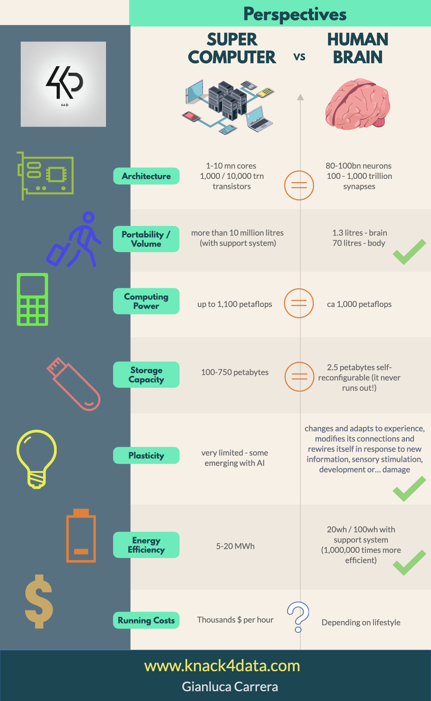
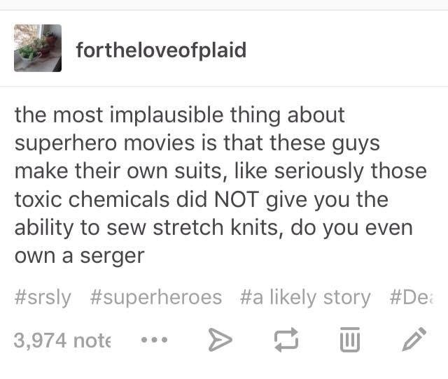

**************WARNING**************
This webpage will contain spoilers for the webserial Worm.
to read without spoilers, read it here.
The above link also contains a synopsis of the story, but for this webpage, I will be focusing on some
of the details of Taylor's power to control insects and how it relates to Entomology.
Worm has 30 arcs and interludes sprinkled in between.
Many of the arcs are insect-themed in naming and can describe the tone of that arc as well.
Arc 1: Gestation - "The process or period of developing inside the womb between conception and birth."
(A fitting first chapter)
Arc 2: Insinuation
Arc 3: Agitation - to "agitate a beehive"
Arc 4: Shell - like a beetle shell
Arc 5: Hive - hive mind or bee hive analogies
Arc 6: Tangle - like in a web
Arc 7: Buzz - the buzz of a swarm
Arc 8: Extermination - insect pests
Arc 9: Sentinel (Wards Interlude Arc) - soldier insects protecting a colony
Arc 10: Parasite - or Parasitoid insects
Arc 11: Infestation - common domestic issue e.g. termites
Arc 12: Plague - upcoming lecture regarding insects + the plague
Arc 13: Snare - antlions setting traps
Arc 14: Prey - the common instance of predator-prey relationships
Arc 15: Colony - ant/bee/termites
Arc 16: Monarch - butterflies rather than royalty
Arc 17: Migration - do insects migrate?
Arc 18: Queen - queen bee/ants
Arc 19: Scourge - another name for a group of mosquitoes
Arc 20: Chrysalis - step in metamorphosis
Arc 21: Imago - another step in metamorphosis
Arc 22: Cell - too many meanings that can relate
Arc 23: Drone - drone bees or male bees
Arc 24: Crushed - the instinctive end result of insect pests
Arc 25: Scarab - as per a scarab beetle
Arc 26: Sting - bees, bullet ants, wasps
Arc 27: Extinction - like the Levuana moth
Arc 28: Cockroaches - a metaphor for survivability perhaps?
Arc 29: Venom - scorpion venom used for skincare and medicine
Arc 30: Speck - a flea appears so
Epilogue: Teneral - "The state of an insect immediately after molting"
Taylor's power is to have fine control over insects. It also includes certain crustaceans. In the
series, she hypothesizes that it's anything with a certain brain "size" a.k.a. brain processing
power.
In addition to the ability to control insects she also has an administrative power of parallel
processing in her brain power to manage all the insects in her control range.
This study suggests that the number of neurons in Drosophila
melanogaster and Culicidae (fruit fly & mosquito) is ~200k neurons

Fig.3
For perspective a human brain has roughly 500k times as many neurons.
While insects have fewer neurons, they run much more efficiently.
even as far as inspiring algorithms based on their efficiency.
However, considering the sensory inputs an insect receives regularly and being hardwired to respond to
certain stimuli, and what it would be like to receive that of even one insect, It would be a lot to take
in.
Taylor receives and manages thousands of insect's senses, while multi-tasking to control them with fine
control.
One feat Taylor accomplishes early after she gets her powers is making her own costume by way of
controlling insects to do it for her.

Fig.4
Taylor goes on morning runs and finds black widows and orb weavers to add to her collection in order to
get the best silk for making her costumes.
Even with many spiders it's a long and arduous task.
She describes feeding smaller bugs to her collection of spiders and keeping them separate while she's
away since black widow's are territorial.
It's an impressive feat especially considering the measures taken to harvest spider silk in real
life.
**************WARNING**************
Trigger warning for spider silk harvesting
Viewer discretion is advised
Spider silk harvesting isn't practical as it's tedious and spider's can only produce so much silk compared to its size which isn't enough for practical applications.
There is also the humane factor, of taking spider silk against the spider's will.
In Worm, Taylor manages a bunch of spiders to not only produce all the silk she needs, but also has all the insects under her control make the costume.
Even with her administrating the thousands of insects, it takes her several months to finish her costume.
Spider silk is known for its strength, in the above Mythbusters Jr. clip. they test its strength compared to steel.
Taylor makes use of its properties being in explosions and the silk dampening the shock impacts. Tasers not having effect since her costume is thick enough that the spider silk is insulating.
At another point in the story, Taylor overpowers a hero much stronger than her, (think superman type of powerful,) by smothering them and forcing themselves into her mouth en masse. It's similar to bees smothering a giant hornet with heat.
This webpage is a work in progress~
Thank you for viewing! Top of Page